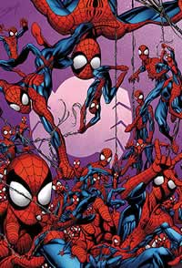

Tudo Sobre
HOMEM ARANHA
Há exatos 50 anos, o Homem-Aranha (Spider-Man), personagem da Marvel Comics, apareceu pela primeira vez. Em agosto de 1962, na décima quinta (e última) edição da revista Amazing Fantasy, surgia o super-herói aracnídeo criado por três monstros sagrados dos quadrinhos: Stan Lee, Jack Kirby e Steve Ditko.
Stan Lee foi o criador do conceito e roteirista das primeiras histórias do Homem-Aranha. Ao seu lado estava Jack Kirby, que participou do desenvolvimento inicial do Escalador de Paredes, mas nunca chegou a ser desenhista regular do herói, papel este que coube a Steve Ditko, o principal desenhista de tramas de mistério e suspense da Marvel e corroteirista de várias das histórias de Lee com o Homem-Aranha.
O Homem-Aranha foi levemente inspirado na personagem das histórias pulp The Spider (O Aranha), protagonista de vários contos. Diferente de todos os super-heróis da época, porém, Peter Parker foi desenvolvido por Lee e Ditko como um adolescente comum e não o tradicional herói imponente e musculoso. Em sua origem, um garoto, criado pelos tios, genial e impopular no colégio, é picado por uma aranha radioativa e desenvolve força e agilidade proporcionais às de um aracnídeo. Inicialmente ele tenta usar tais habilidades para ganhar fama e dinheiro, mas ao descobrir que um ladrão que ele impediu de escapar foi o assassino de seu tio, Peter Parker decide usar seus poderes para o bem, vivendo através do lema de seu Tio Ben: "Com grandes poderes vêm grandes responsabilidades".
Nessas cinco décadas de história, o Homem-Aranha saiu dos quadrinhos para ganhar séries de televisão, desenhos animados, games, musicais, merchandising e filmes, tornando-se uma das maiores franquias da indústria do entretenimento.
Um acordo entre o Marvel Studios e a Sony Pictures oficializou a entrada do teioso no universo cinematográfico da Marvel, aumentando ainda mais a popularidade e a abrangência do super-herói. Clique no título para entrevistas e análises. Abaixo, tudo sobre o personagem, dividido por temas.
Homem-Aranha nos quadrinhos
- A criação do Homem-Aranha nas HQs 
- ABC de criadores do Homem-Aranha
- Os vilões do Homem-Aranha - Camaleão, Abutre,
- Os vilões do Homem-Aranha - Escorpião, Rei do Crime, Morbius, Chacal, Duende Macabro, Venom, Carnificina, Kaine
- Os vilões do Homem-Aranha - Besouro, Bumerangue, Rino, Lobisomem, Homem-Hídrico, Corisco, Shocker, Prof. Smythe, Magma, Mestre dos Robôs, Lápide, Fraude, A Legião dos Perdedores
- As mulheres especiais na vida do Homem-Aranha
- Os principais títulos do Homem-Aranha
- Momentos marcantes do Homem-Aranha
- Momentos constrangedores do Homem-Aranha
- Guia de leitura do Homem-Aranha no Brasil (Editora Abril)
- Homem-Aranha 2099
- Crossovers do Homem-Aranha
- Os uniformes do Homem-Aranha nos quadrinhos